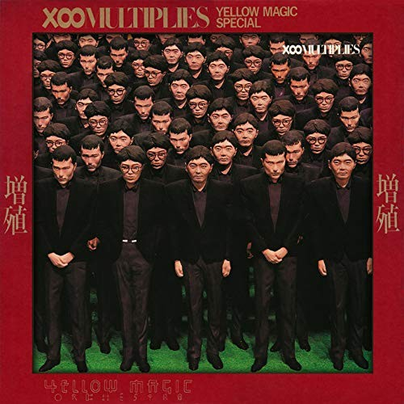

Music
< Back Home
The Boredoms
This is a "genre" (whatever that means) of music at which, even a couple years ago, I would've turned my nose up. But I've grown up and have learned to appreciate most things in life, and being in an altered state (for any potential employers reading, by that I mean getting high on life) and listening to "noise-core" like this is ironically one of the most serene experiences I've had. It started by being recommended The Gerogerigegege's live album 'Tokyo Anal Dynamite' to which I thought "haha funny name, I'll give that a listen" but pretty soon I had listened to the full 30 minute set of incoherent screaming and screeching guitars and found myself wanting more. In all fairness to the algorithm, it provided; showing me The Boredoms' Anal by Anal LP (I'm not going to critically reflect on why albums with those names were recommended to me) and again; play that for me a few months ago and I'd think you were taking the piss, but I really enjoyed it. I've since listened to a lot of the Boredoms' stuff, and only a bit more of The Gerogerigegege's ouvre, but I can't believe how much I've grown to love the music they make.
At the risk of putting anyone off of the Boredoms' earlier work, I think I have to say it's easier to get into their later stuff, like 'Vision Creation Newsun' or one of the later entries in the 'Super Roots' series. These albums are still noisy and sometimes sound like a boomer's exaggerated idea of what them crazy kids are listening to ("When do they stop tuning their instruments and start playing the music?") but they're not so out there that you might turn them off if you haven't heard anything like it before. 'Super æ' falls into this category too, it being one of my favourites ('Super Shine' is a fantastic track off this album). Everything from this later era has a great mantric, joyous exaltation feeling to it (exemplified in the 'Super Roots' LPs).
Their earlier stuff isn't to be ignored either, with LPs like 'Chocolate Synthesizer', 'Soul Discharge' and the aforementioned 'Anal by Anal' being fun little excursions into a world of music you may not make a habit of listening to.
What I'll try to do for any artist I mention here is give one single album or even a single track that I think you should try and listen to to see if it leaves you wanting more. In this case, I would say try 'Super æ' and if you don't have time for the whole album, you can take 15 minutes to listen to the track 'Super Shine'. All going well, you can follow up on some of the other albums mentioned here, or let the algorithm take you where it sees fit.
Yellow Magic Orchestra
Yellow Magic Orchestra, a.k.a. YMO was a trio from ancient history (the tail-end of the 70s) made up of Haruomi Hosono, Ryuichi Sakamoto, and Yukihiro Takahashi about whom I probably have more to say individually than their work as a group. There were, of course, other contributors to the project, but these three are the heart and soul of the group. All three were talented and established artists at the time of the band's forming, so their debut, self-titled album is an instant classic, with stand-outs for me being Cosmic Surfin', Simoon, and La Femme Chinoise. They pushed the envelope in terms of electronic music at the time. You could be easily convinced that their music is from a time where these tools - modular synthesizers, drum machines, samplers etc. - had been around for decades and everyone knew how to use them, but these guys were on the forefront, pioneering the sound that would become synonymous with electronic music.
They followed it up with Solid State Survivor which again has a lot of tracks I love; Rydeen is possibly the song for which they're best known, and for good reason, but other faves from this album would have to be Absolute Ego Dance and Behind the Mask (which Sakamoto originally composed for a Casio ad!)

Their next album, X∞Multiplies, a comedy album featuring skits from members of Snakeman Show (Katsuya Kobayashi ❤ my goat) is, from what I can gather, not a favourite among fans. I love it. It's got a great original track in Nice Age which is like something straight out of Bowie's Ziggy Stardust era (same goes for Citizens of Science), and they've done a great cover of Tighten Up that even has an encore! I love that energy, just keep playing the hits, man. I'll eat that shit up!

The album after that, BGM, is seemingly highly regarded. One of my favourite songs of all time features here, Cue. Something about Takahashi's restrained, almost nervous vocals makes this such a beautiful track that I have to listen to multiple times any time it comes into my mind. I promise I'll stop the glazing soon, but lyrics like "I'm sick and tired of the same old chaos" and his delivery of them genuinely blew my mind when I first heard this song. This album also has a sick version of 1000 Knives, a piece Sakamoto composed for his debut album before YMO.
Next is Technodelic which is just another chance for them to show off how far ahead of everyone else they really were. Heavy use of sampling and looping creates some really memorable tracks, chief among them for me being the final, aptly-named Epilogue. Constant, repeating industrial clangs and hissing is something you might think would sound unpleasant, not usually what you want in a song, but just listen to it, it's a beautiful piece. A black sheep (and one of my favourites) on this album is the track Taiso, which is very Talking Heads sonically - so I wasn't surprised to learn that they (apparently) directed the music video for it.
Naughty Boys comes next, and is somewhat of a parody of pop music at the time, but, call me raffish because I love most of the songs on here. They're all fantastic. Kimi ni Mune Kyun, Ongaku, and Opened My Eyes are all stereotypical pop songs but they're fun and catchy. The rest of the tracks are more in line with what we've seen before, but still, the boys are trying something new. Expecting Rivers, Kai-Koh, and Expected Way are great (the first of those must have served as inspiration for Chappelle Roan's Hot To Go, I swear) but Wild Ambitions is another favourite of mine from them, probably because it reminds me of Cue. You've Got to Help Yourself is a really triumphant track that only appears as an instrumental preview on this album, but is seen in full on the next album (in fact, instrumental versions of every track can be found on the companion album titled, you guessed it, Naughty Boys Instrumental. This also has a track that isn't on the main album, Chaos Panic which is another classic for me).
Service. Honestly? Haven't listened to this one yet lmao. I've loved YMO for a long time now, and I do know some of the individual tracks off this (the aforementioned You've Got to Help Yourself and Perspective) both of which I like!!! But I just haven't sat down and listened to this one in its entirety yet. Please don't be mad at me I've just never been in the mood, probably because I love them so much I feel like I have to pick a special day and set aside at least an hour to truly experience it instead of just sticking it on in the background. Plus, this was their last album before disbanding for a decade, so I'm kind of scared to listen to it. Maybe that's a good segue into talking about their solo work...
Haruomi Hosono